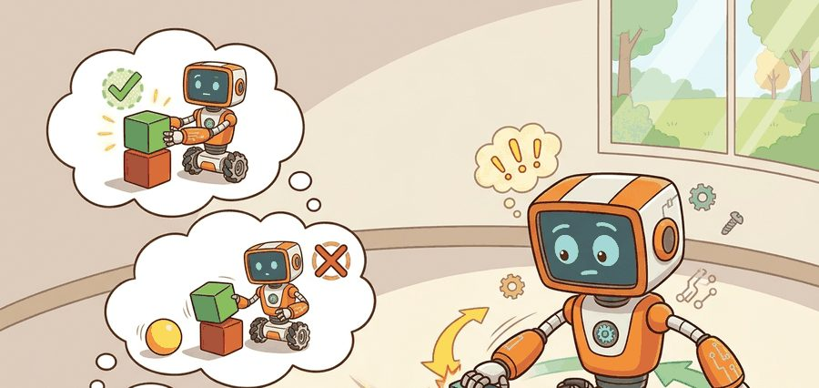
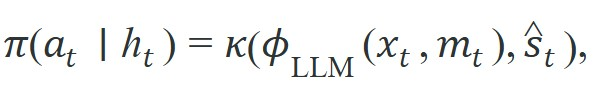

"Ask an LLM what to do next and it answers fluently. Ask it whether the gripper is already closed and it guesses with equal fluency."
A Humbled Task Planner

Figure 33.1A previews the split this section develops in full: the LLM's strengths cluster around symbolic planning and language grounding, while its weaknesses cluster around precise spatial reasoning and high-frequency reactive control.
This section assumes familiarity with the agent-environment loop from section 2.7 and with feedback control basics from section 7.1. The capability boundary drawn here is extended in section 33.2, which shows how SayCan couples LLM proposals to grounded affordance scores, and in section 31.5, which covers symbolic and programmatic plan representations that sit at the same interface. The verifier design introduced here recurs in Part 8 alongside world-model prediction in section 36.1.
Read the figure as a boundary map. The LLM can propose task structure and language-level intent, but the embodied system still needs state estimation, affordance checks (where an affordance is a score for whether a proposed action is currently possible given the robot's pose, reach, and the object's position, not merely whether it sounds sensible), typed action APIs, execution monitoring, and a verifier that can reject unsupported plans.
Figure 33.1 makes that division concrete: it traces the closed loop from instruction to planner to tool API to verifier, then routes failure evidence back to the next decision. Every component discussed below maps onto one of its four stages, so the figure doubles as a structural template.
Depth and self-containment. This section must separate semantic strengths from physical weaknesses. Readers should know exactly which parts of embodied competence can be offloaded to an LLM and which parts still demand grounded state, typed tools, and control feedback.
Production and evaluation contract. The artifact here is a planner trace with prompt state, proposed subgoals, tool calls, verifier outcomes, and latency. Without those fields, it is impossible to tell whether the LLM contributed real control value or just plausible narration.
For What LLMs can and cannot do in embodied tasks, name the language interface, grounded world state, executable action contract, and evidence artifact before trusting any claimed improvement.
For What LLMs can and cannot do in embodied tasks, write one evidence row recording instruction, world-state estimate, chosen action, verifier result, and failure label. Then identify which field would change first under command misunderstanding.
A robot arm is told "put the mug on the shelf." The LLM generates a perfectly logical subtask list in under a second. Then the arm sweeps the mug off the table because no component checked whether the gripper was already closed. That gap, fluent language on one side, blind physical execution on the other, is the central design problem of 2024-era embodied AI. Teams are now deploying LLM planners in real kitchens, warehouses, and surgical suites, and the failure modes are not obvious from benchmarks. This section maps exactly where LLM reasoning adds value and where it must be fenced off, so that systems can stay safe when language and physics diverge.
Tell a state-of-the-art LLM to "put the mug on the shelf" and it will hand you a flawless subtask list in under a second; tell it whether the gripper is currently open or closed and it will guess, with exactly the same confidence, and that asymmetry is the whole reason this section exists.
The practical question is not whether the LLM can describe the right action sequence, but whether that description can be turned into safe, low-latency, grounded behavior. A plan that reads correctly but cannot be executed is not a plan; it is a polite suggestion the robot has no way to honor.
Use the LLM for semantic search over plans and interfaces, not as a substitute for state estimation or servo control.
A convenient decomposition is

where $\phi_\text{LLM}$ proposes a symbolic or programmatic plan from language context $x_t$ and memory $m_t$, while $\kappa$ is the grounded executor that consumes the proposal together with the current state estimate $\hat s_t$. The executor, not the LLM, owns physical validity.This split explains both the promise and the limits. LLMs compress broad semantic priors into a small number of candidate subtasks or tool sequences. They do not directly measure friction, occlusion, latency, or actuator saturation; this is the language-physics gap, and it is why every LLM proposal needs a grounded verifier before execution. When papers claim strong embodied performance, the key question is how much the grounded stack contributes beyond the language model itself.
The gap matters physically because a robot cannot pause while the world waits. An arm mid-grasp that receives a semantically plausible but physically invalid next command has no safe default: it must halt, drop the object, or execute the command and risk collision. Latency compounds the problem. An LLM call takes tens to hundreds of milliseconds, far too slow for reactive feedback control at servo rates (typically 500 Hz to 1 kHz). At 1 kHz, the arm moves through roughly 20 control cycles while the LLM still generates its first token. The plan therefore arrives for a configuration the robot left 20 steps ago. Any plan that arrives late is a plan computed for a world that no longer exists.
The gap has a mechanical cause: LLMs train on text, so their tokens represent concepts, not physical states. The model learns that "the cup is full" co-occurs with "pour carefully," but it never sees joint torques, fluid dynamics, or camera depth. At inference the model samples plausible next tokens, not dynamically feasible trajectories. High token probability and physical feasibility are independent. That independence is why the verifier must be a separate grounded component.
Before reading further: if an LLM proposal scores in the top 1% of token probability, what is the probability it is physically executable on the robot in front of you? Take a guess, then keep reading.
Think of a recipe writer versus a cook. A recipe writer can produce a perfectly worded step, "fold the egg whites until stiff peaks form," because that phrasing appears often in cookbooks alongside successful results. But the writer has never held a whisk, felt the resistance of the foam change, or noticed that the bowl is too warm. The cook, by contrast, reads the words and then uses her hands, eyes, and judgment to decide whether the current bowl of whites can actually reach stiff peaks. Token probability is like the recipe writer's word choice: it reflects what has appeared together in text, not what is physically achievable in this kitchen, with this bowl, at this temperature, right now.
Treat the LLM as a high-level search policy over task decompositions, code sketches, or tool calls. Every proposal must pass through typed interfaces, state checks, and local controllers that know the robot's embodiment and current scene.
Input: task instruction $x_t$, memory $m_t$, state estimate $\hat{s}_t$, typed action schema $\mathcal{A}$, policy parameters $\theta$
Output: executable action $a_t$ or replan signal $\perp$
So far: the algorithm encodes the LLM's proposal, type-checks it against the action schema, and confirms its preconditions against grounded state, before the affordance score, constraint check, and latency budget get a chance to reject it; the step-through below walks one proposal through exactly this chain.
Trace the algorithm with a tiny example. Instruction $x_t$ = "pick up the sponge"; state estimate $\hat{s}_t$ = {sponge_pose: 12 cm beyond reach, gripper: open}; schema $\mathcal{A}$ = {pick(obj), place(obj)}; $\alpha_{\min}$ = 0.4; $T_\text{budget}$ = 300 ms.
pick(sponge) with token probability 0.92.pick(sponge) matches schema $\mathcal{A}$, so pass.target_visible = True, pass.navigate(closer), which scores $\alpha$ = 0.71 and executes.The numbers make the boundary visible: a 0.92 text score and a 0.05 affordance score sit side by side, and the verifier, not the LLM, decides.
Code Fragment 1 implements the smallest planner boundary: the LLM proposes one symbolic subgoal, but the executor only accepts it if the required tool and state preconditions are satisfied.
# Accept an LLM proposal only when the grounded stack can execute it.
# The executor checks state and tool availability before acting.
# This boundary keeps semantic planning separate from physical validity.
proposal = {"step": "pick(red_mug)", "required_tool": "grasp"}
state = {"target_visible": True, "toolbox": {"grasp", "place"}}
can_execute = state["target_visible"] and proposal["required_tool"] in state["toolbox"]
decision = "execute" if can_execute else "replan"
print({"proposal": proposal["step"], "can_execute": can_execute, "decision": decision})The expected output is an executable proposal whose semantic content and grounded feasibility agree. If `proposal` looked sensible but `can_execute` were `False`, the correct diagnosis would be a grounding or interface failure rather than a language-understanding success.
Structured-output tool-calling (OpenAI function calling, Anthropic tool use) lets you enforce a typed action schema such as MoveToJointAngles(joints: list[float], max_vel: float) rather than parsing free text. On a Franka Panda arm, this matters concretely: the grounded executor rejects any joint-angle vector outside the 7-DOF (degrees of freedom) limits before the ROS 2 action client even fires, turning a potential over-torque event into a clean schema-validation error logged in under 1 ms. The same pattern applies on a Boston Dynamics Spot: a typed NavigateToWaypoint(waypoint_id: str, speed_hint: float) call routes through Spot's internal body-pose estimator, whereas an untyped prose reply ("walk to the door") bypasses it and hands off to the caller with no precondition check. Use forced tool choice (tool_choice="required") so the model never silently falls back to free text when the instruction is ambiguous.
When using the OpenAI or Anthropic tool-calling APIs, set tool_choice to the name of your action schema (e.g., {"type": "tool", "name": "propose_subgoal"}) rather than leaving it at "auto". With "auto", the model may return a free-text reply instead of a structured tool call whenever it judges the input ambiguous, silently bypassing your typed interface and verifier. Forcing a specific tool ensures the executor always receives a JSON object it can validate, and surfaces prompt ambiguities as schema errors rather than as plausible-sounding prose that slips past your state checks undetected.
The forced-tool-choice discipline above keeps a single proposal honest; the recipe that follows scales that same boundary into a repeatable build checklist for an entire planner.
A natural but mistaken assumption is that a fluent, complete, and logically coherent LLM action plan is one the robot can safely execute. Linguistic coherence and physical feasibility are independent: a plan can be grammatically perfect, semantically sensible, and still impossible to execute given the robot's current joint angles, workspace limits, or sensor readings. The LLM has no access to live state and cannot verify its own proposals against the physical world. The correct mental model is that every LLM proposal is a hypothesis that must be tested against grounded state before any actuator moves.
A frequent failure mode is to confuse descriptive competence with control competence. An LLM may explain how to pour safely while still lacking any grounded estimate of the cup pose, liquid dynamics, or actuator limits needed to perform the action.
Consider a specific case. In SayCan (Ahn et al. 2022), a GPT-class LLM proposes "pick up the sponge" with high language-model probability. The affordance scorer returns near-zero, because the arm is already at maximum reach and the sponge sits 12 cm outside the workspace. The LLM cannot access joint-angle limits or depth estimates; it scores the step as plausible because "pick up sponge" is semantically coherent given the task description. Without the affordance multiplier, the robot attempts the grasp, fails at the controller level, and the episode ends. The breakdown is not a language error. The system treated a high text probability as a stand-in for physical feasibility. This pattern recurs whenever an LLM proposal bypasses the grounded state check, whether from a missing verifier, a stale world model, or an incomplete tool schema.
On a Toyota HSR or a Hello Robot Stretch 3 doing mobile manipulation, an LLM can select the sequence 'navigate to sink, grasp sponge, wipe spill,' but it should not be the module that estimates whether the sponge is within the 76 cm telescoping reach of the Stretch arm or whether the planned base pose clears the counter overhang. Those checks belong to the grounded stack: the head RGB-D camera feeding a perception node for sponge visibility, and MoveIt 2 collision checking against the live occupancy map for reachability. The LLM never sees the joint encoders or the depth point cloud, so it cannot answer either question even when its subtask sequence is correct.
Google DeepMind's RT-2 and the SayCan stack deployed at Everyday Robots used exactly this split: a PaLM-class LLM proposed kitchen and tidying subgoals while a separately trained affordance value function scored each one against the live scene before any skill ran. The LLM never touched the joint controllers; its proposals were gated by grounded affordances, which the published SayCan evaluation reports as lifting long-horizon task completion from roughly 47% (language-only) to about 84% on the 101-instruction evaluation suite, though exact figures vary somewhat across the paper's task subsets and later replications.
Large language models are fantastic interns for whiteboard planning. They are much less convincing when asked to be gravity, friction, and depth sensors all at once.
1. LLM-native verifier loops and self-critique planners. Rather than pairing a frozen LLM with a hand-written verifier, recent work trains the model to generate, execute, and criticize its own proposals within one inference pass. ReKep (Huang et al., 2024, Stanford) defines keypoint-based relational constraints from VLM (Vision-Language Model) outputs and uses them as self-contained verifiers, closing the loop between language and geometry without a separate constraint solver.
2. Hierarchical code-as-policy with runtime state injection. CaP (Code as Policies, Liang et al.) and its 2024 successors such as RoboCodeX inject live sensor readings into generated Python at execution time, turning the LLM into a meta-programmer rather than a fixed planner. Google DeepMind's RT-2-X (Open X-Embodiment Collaboration et al., 2023) extends this to multi-robot fleets, testing whether a single code policy transfers across embodiments without per-robot prompt engineering.
3. Grounded long-horizon memory for multi-day tasks. Single-episode LLM planners cannot accumulate object-state history across sessions. OpenEQA (Majumdar et al., 2024, Meta FAIR) defines open-vocabulary embodied question answering that requires maintaining scene-state across time steps, pushing planners to integrate episodic memory with the language interface rather than relying on a freshly seeded prompt each call.
Open problem for a PhD student. No current benchmark cleanly separates the semantic contribution of the LLM from the contribution of the grounded stack (perception, state estimation, controller). A controlled ablation framework that swaps LLM planners while holding the grounded stack fixed, and measures task success, failure-mode distribution, and latency separately, does not yet exist at the scale needed to draw causal conclusions. Building such a framework on a reproducible simulator such as Isaac Lab or SAPIEN 3 would let the field move beyond task-score comparisons toward intervention-level attribution.
Can you point to one subproblem in your stack that genuinely benefits from broad language priors, and one subproblem where replacing a grounded estimator with an LLM would be irresponsible or pointless?
Since the research frontier above keeps moving the verifier inside the model, it becomes even harder to tell what the language component actually contributes, which makes the next discipline essential. A useful scientific discipline is to evaluate LLM contribution at the intervention boundary. Replace the LLM planner with a hand-written planner, a behavior tree, or a retrieval baseline while keeping execution fixed. If performance barely changes, the embodied value comes from the grounded stack, not from the language model.
This reframes the hype around end-to-end embodied agents. Emitting an action token is easy; the hard test is whether a model holds a physically valid internal state, meets timing budgets, and recovers from embodiment-specific failures. Most current systems still delegate those jobs to specialized modules.
| Tool or Library | Role in the Topic | Builder Advice |
|---|---|---|
| Structured tool calling | Typed action proposals from the LLM. | Use it when free-form text would make execution or evaluation ambiguous. |
| ROS 2 actions | Execution of long-running robot skills with feedback. | Use actions when the LLM proposes skills rather than continuous controls. |
| BehaviorTree.CPP | Explicit fallback and retry logic. | Use it when LLM proposals need a deterministic execution skeleton. |
| MoveIt 2 | Grounded motion planning and collision checking. | Use it to execute geometric subgoals that an LLM can describe but not validate. |
| LangGraph | Memory and planner state transitions. | Use it when the planner must maintain multi-step conversational or tool context. |
Those tools each occupy one slot in the boundary, but a boundary is only trustworthy if you can audit what crossed it, which is exactly what the trace below records. Code Fragment 2 saves a planner trace with the fields needed for real evaluation. The key idea is that every proposal is logged alongside its verifier result and latency, so semantic fluency cannot hide execution failure. The trace below records a logprob value (the log-probability the model assigned its own output token, a proxy for text fluency, not physical feasibility) next to the verifier's decision, so the two can be compared directly.
# Log an LLM planner proposal as an auditable control trace.
# Every field needed to separate semantic quality from execution cost is recorded together.
import time
def log_planner_trace(prompt_context, planner_output, verifier_result, precheck_ms, exec_ms):
return {
"prompt_context": prompt_context,
"planner_output": planner_output,
"verifier": verifier_result,
"latency_ms": {"plan": precheck_ms, "execute": exec_ms},
"timestamp": time.time(),
}
trace = log_planner_trace(
prompt_context="pick up the sponge",
planner_output={"step": "pick(sponge)", "logprob": -0.08},
verifier_result="blocked",
precheck_ms=210,
exec_ms=0,
)
print(trace)The expected output is a co-recorded control trace where the planner decision, the verifier evidence, and the latency measurement all point in the same direction. A useful negative case would keep the same structure but end with `result='blocked'` or `result='replan'`, which would let you localize the failure without replaying the whole episode.
If an embodied LLM system underperforms, first ask whether the LLM chose the wrong subgoal, whether the tool interface was incomplete, or whether the grounded stack could not realize an otherwise good plan. Those are very different scientific conclusions.
What LLMs can do: compress broad semantic priors into candidate subtask sequences, propose typed tool calls or code sketches from natural-language instructions, and classify or explain failures once a grounded verifier has labeled them. What LLMs cannot do: measure friction, occlusion, actuator saturation, or joint state; verify their own proposals against live sensor data; or meet servo-rate timing budgets (an LLM call at tens to hundreds of milliseconds is far slower than the 500 Hz to 1 kHz control loop it would need to feed directly). Every mechanism in this section, the affordance gate, the typed schema, the latency budget, exists to keep the LLM inside the first list and out of the second.
LLMs help embodied systems most when they are boxed into a typed planning role and surrounded by grounded verifiers and controllers.
Pick one embodied task and write a boundary contract for an LLM planner. List exactly which inputs it sees, which outputs it may emit, and which module rejects invalid proposals before execution.
Goal: empirically show that high LLM token probability does not predict physical feasibility, and that a grounded verifier recovers task success.
Tools needed: Python, the gymnasium-robotics package (FetchPickAndPlace-v2, a MuJoCo-backed tabletop arm), and any LLM API (OpenAI or Anthropic) with structured tool calling. About 20-30 minutes.
Steps: (1) Reset the environment and read the object and gripper positions from the observation dict. (2) Prompt the LLM with the goal and ask it, via a typed pick(obj) / place(obj, pos) schema, for the next subgoal; log its returned proposal and the reported logprob (the log-probability the model assigned its own output token, a proxy for text fluency rather than physical feasibility). (3) Write a 5-line verifier that rejects any proposal whose target is outside the arm's reach radius (compute Euclidean distance from gripper to object). (4) Run 30 episodes twice: once executing every LLM proposal directly, once gating through the verifier.
What to vary: the reach radius threshold, and the fraction of episodes where the object spawns out of reach (force this to 50%). What to observe: compare task success rate with and without the verifier, and plot LLM logprob against the verifier's accept/reject decision. You should see proposals with near-top logprobs that the verifier correctly rejects, mirroring the 0.92-vs-0.05 split in the step-through above.
EmbodiedBench is a recent reference for evaluating embodied language systems across navigation and manipulation settings.
Ahn et al. (2022). "Do As I Can, Not As I Say: Grounding Language in Robotic Affordances." arXiv.
SayCan is the cleanest starting point for understanding how an LLM can propose while grounded affordances dispose.
BehaviorTree.CPP Documentation. 'Integration with ROS2.'
This documentation is a practical reference for surrounding language proposals with explicit execution logic and recovery branches.
Beginner (weekend): LLM planner with a typed verifier in Gymnasium. Build a tabletop pick-and-place environment in Gymnasium (e.g., FetchPickAndPlace-v2) where an LLM proposes symbolic subgoals via structured tool calling and a hand-written verifier checks object visibility and reach before each action executes. The key challenge is defining a typed action schema narrow enough that the LLM cannot bypass the verifier with free-text fallback. Intermediate (1-2 weeks): SayCan-style affordance gating in PyBullet with a ROS 2 action interface. Implement a mobile manipulation loop in PyBullet in which an LLM ranks candidate skills and a learned affordance network gates execution, exposing each skill as a ROS 2 action so the typed interface and precondition checks are enforced before any joint command fires. The key challenge is keeping the affordance scorer and the LLM proposals synchronized when the scene changes mid-episode. Intermediate (1-2 weeks): Replanning loop with failure classification in LeRobot. Use the LeRobot framework to replay a manipulation dataset while injecting deliberate failures (wrong tool, object out of reach, latency exceeded) and route each failure class to a different recovery branch in a BehaviorTree.CPP skeleton driven by LLM replan prompts. The key challenge is labeling failures correctly at runtime so the recovery branch matches the actual root cause rather than the most recent plausible-sounding LLM explanation.